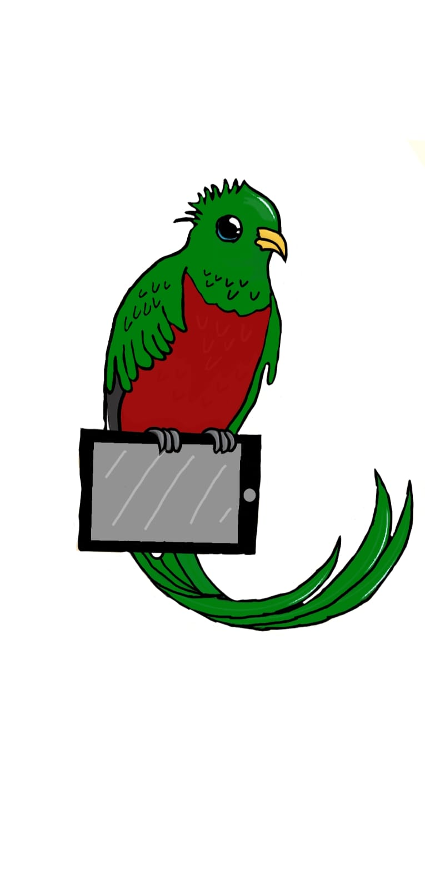

Solouciones creativas en europa
En europa
Una buena iniciativa para la gestión de residuos electrónicos es la de la ciudad andaluza de Córdoba, en España, que presentó el “Servicio de recolección de residuos electrónicos”, con motivo del Día Mundial del Medio Ambiente (el 5 de junio). Este servicio consiste en gestionar de manera sostenible los desechos de tipo electrónico que generan los vecinos de la ciudad.
Su ejecución está a cargo de una empresa privada y funciona en respuesta a demandas concretas de los vecinos, a través de un número telefónico gratuito. Así, en un lapso de 10 días a partir de la recepción de la solicitud, un camión acondicionado especialmente para esta función pasa por el domicilio para retirar los desechos electrónicos.
El servicio andaluz está diseñado para recoger residuos electrónicos de cierto volumen, como teclados de ordenador, CPUs, monitores, televisores, reproductores de VHS o DVD, entre otros electrodomésticos de pequeño y mediano tamaño. Si te preguntas acerca del coste de este servicio, ¡es totalmente gratuito! Siempre y cuando la basura a recoger no supere los cinco elementos.
Es importante destacar que esta solución para reciclar basura electrónica no incluye todo los tipos de residuos. Por ejemplo, algunos de los equipos que el servicio no puede recoger son: refrigeradores, congeladores, heladeras, lavadoras, secadoras o lavavajillas, ni aparatos electrónicos de calefacción, ventilación o aire acondicionado.

Soluciones creativas en america
En América
Dichas organizaciones asesoran a las compañías para que cada vez sean menos los componentes que tiran y que certifiquen su política medioambiental en este ámbito. Ejemplo de ello es la Plataforma RELAC, encargada de buscar soluciones ante los residuos que generan los ordenadores en Latinoamérica.
La plataforma en cuestión es una organización sin ánimo de lucro que pretende armonizar la gestión de basura electrónica en todo el continente. Es una iniciativa interesante que les permite a los países latinoamericanos beneficiarse de prácticas respetuosas con el medio ambiente.
